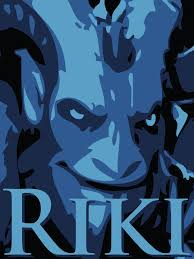
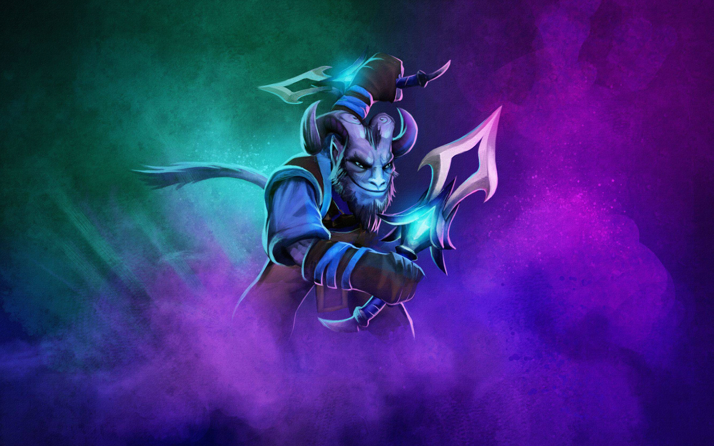
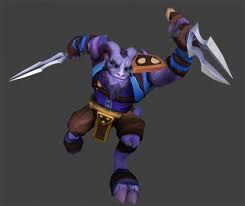

Riki - Rikimaru the Stealth Assassin görünmezlik üzerine kurulu yapısı ile düşmanlarına sürpriz saldırılar ile ani ölümler gerçekleştirebilen bir yakın saldırı kahramanıdır.
Ultisi ile birlikte sınırsız şekilde görünmezlik yeteneğine kavuşmuş olur. Saldırı yaptıktan sonra veya yeteneklerini kullandıktan sonra kısa bir süre içersinde tekrar görünmez olur. Alana atacağı sis bombası ile düşmanlarının ıska vurmasını sağlar ve alan içindekilerin yeteneklerini kullanmasını engellediği gibi hareket hızlarını da yavaşlatır. Bu yeteneği takım savaşlarında büyük önem taşır.
Yüksek saldırı potansiyeli taşıdığı için ilk öldürülmesi gereken hedeftir. Karanlıklarda saklanarak düşmanlarına son vuruşlar gerçekleştirebilir ki bu onun çok hızlı şekilde güçlenmesine sebep olacaktır.


